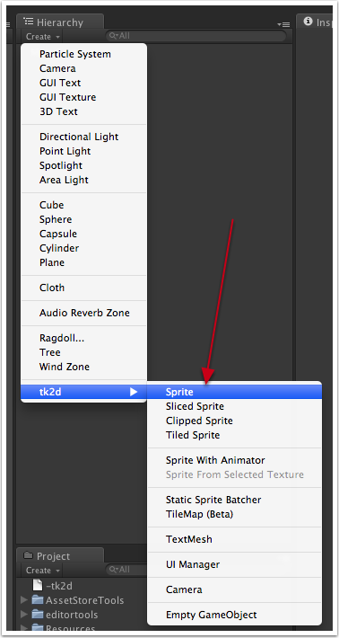
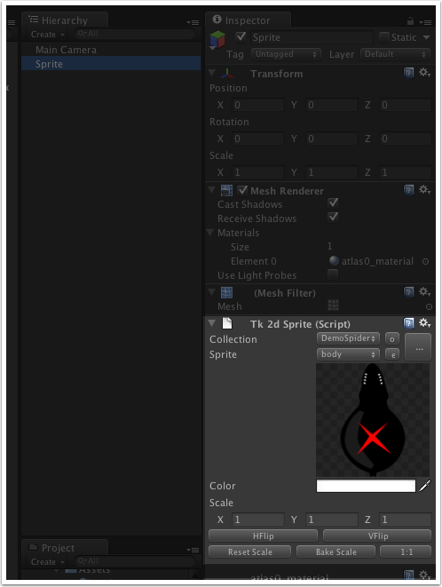
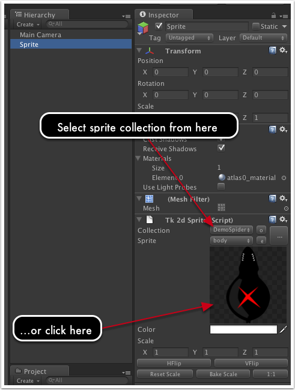
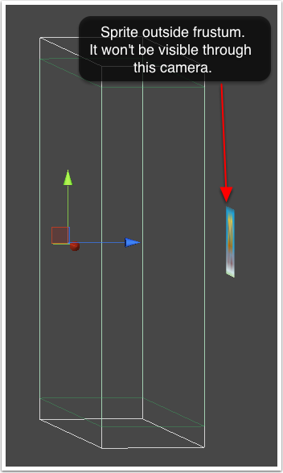

Documentation
Script Reference
Forum
Documentation
Script Reference
Forum
In the previous section we looked at creating a sprite collection, but that doesn't actually put any sprites into our game world. We will now look at how to add a sprite to the game.
Create a sprite by clicking on "Create > tk2d > Sprite" in the Hierarchy Window.

Your sprite now appears in the Hierarchy Window and in the viewport.
Click on the sprite object in the Scene Tab or in the Hierarchy Window, and the Sprite editor inspector appears. 
If 2D Toolkit hasn't automatically picked the correct Sprite Collection for you, you can click on the Collection drop-down box and select a different one. The sprite within your scene should update instantly to reflect the changes. If your Sprite Collection has a collider set up, an appropriate collider will automatically be built in the scene too.

Congratulations! You should now have a sprite in the scene.
Make sure the sprite is the correct size. If you've followed the instructions so far, your sprite should be the correct size. Select the sprite and click "1:1" to see if it becomes visible. If it does, it means that the sprite wasn't created at the correct size - either correct the camera, or the settings in the sprite collection editor to fix this.
Make sure the sprite is INSIDE the view frustum. You can make sure it is by selecting the camera, and rotating the camera in scene view so that you can see the sprite relative to the 3D box outlined by the tk2damera. If it is outside this box, move it into the box. camerafrustum">